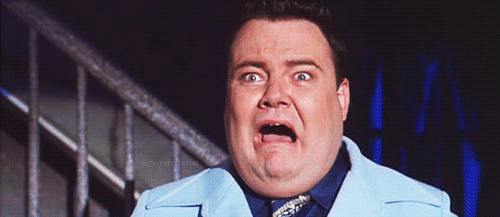

Teatavasti oli Jugoslaavia riik, kuni 1929. aastani Serblaste, Horvaatide ja Sloveenide Kuningriik loodud alles Esimese maailmasõja lõpulainetustes, 1918. aastal ja kuigi Aleksandar I oli tõusnudki troonile 1921. aastal, kandis ta austavat tiitlit Ühendaja - Serbia regendina 1914. aastast ja sõjavägede ülemjuhatajana Esimese maailmasõja rinnetel aitas just tema lõunaslaavlastel oma kuningriiki luua. Paraku juba Balkani sõdade ajal oli tekkinud konflikt Makedoonia üle, mida enamik kohalikust elanikkonnast tahtis ühendada Bulgaariaga. 1913. aastal saabus tollal veel kroonprints Aleksandar türklastest vabastatud Skoplje linna, kus tervitas teda lilledega rahvahulk. Kui aga ta küsis lilledega tüdrukult "Kes sa oled?," siis see vastas "Bulgaarlane" ja sai printsilt kohe kõrvakiilu, rääkis levinud legend. Makedoonlased ei andestanud. Terrorirühmitus IMRO (Sise-Makedoonia Revolutsiooniline Organisatsioon) oli sündinud juba Osmanite võimu ajal 1893. aastal. Vlado Chernozemski (õige nimega Velitško Kerin) oli saanud selle palgamõrvariks 1922. aastal, ning kahe tuntud tegelase mõrvaga Makedoonias oli ta juba varem välja teeninud surmanuhtluse, aga siiski vabadusse pääsenud. 1934. aastal koolitas ta rühma terroriste, et kuningat tappa, lõpuks haaras aga ise relva. Marseilles atentaadi järel peksis kohapeal olnud rahvamass aga Chernozemski surnuks. Väidetavalt olevat IMRO vandenõusse segatud olnud ka Horvaatia ustašite juht Ante Pavelic, kui seda legendi just uskuda saab. Bulgaarias peetavat aga Chernozemskit tänaseni rahvuskangelaseks. Louis Barthou oli tuntud Prantsusmaa poliitik ja ühtlasi ametiühinguliikumise ajaloo ekspert, kes 1913. aastal oli kaheksa kuud ka Prantsusmaa peaministriks. 1934. aastal üritas ta välisministrina luua nn Idapakti Saksamaa, N Liidu, Poola, Tšehhoslovakkia ja Balti riikide vahel, mis paraku nurjus. Küll suutis ta tuua N Liidu Rahvasteliidu liikmeks 1934. aastal, pärast hitlerliku Saksamaa lahkumist sealt. Atentaadi ajal sai Barthou vaid kätte haavata, aga kuna ta ei saanud kohe arstiabi, suri ta ikkagi. Kuningas suri juba autos.Automaatpüstol, mida tema tapmisel kasutati, kandis tähist Mauser C96. VIDEOD: Kurikuulus atentaat: terrorist tappis Jugoslaavia kuninga ja Prantsuse välisministri (4) 09. oktoober 2014 14:20 Heiki Suurkask, toimetaja Heiki Suurkask, toimetaja www.FORTE.ee Täna, 80 aastat tagasi, 9. oktoobril 1934 Marseilles linn. Jugoslaavia kuningas Aleksandar I on saabunud riigivisiidile Prantsusmaale ja sõitis just autokolonnis kõrvuti Prantsuse välisministri Louis Barthouga. Makedoonlasest terrorist Vlado Chernozemski pääses auto juurde, tulistas neid, ning mõlemad ohvrid said surma. Kui selle visiidi sooviks oli olnud Prantsusmaa kaasabil tugevdada senist nn Väikest Antanti (Tšehhoslovakkia, Rumeenia, Jugoslaavia) Hitleri võimuletuleku järgses Euroopas, siis terroristlik rünnak suutis just selle lootuse purustada ja nimetatud liit lakkas lõplikult eksisteerimast neli aastat hiljem Tšehhoslovakkia riigi hävitamise hinnaga. Teatavasti oli Jugoslaavia riik, kuni 1929. aastani Serblaste, Horvaatide ja Sloveenide Kuningriik loodud alles Esimese maailmasõja lõpulainetustes, 1918. aastal ja kuigi Aleksandar I oli tõusnudki troonile 1921. aastal, kandis ta austavat tiitlit Ühendaja - Serbia regendina 1914. aastast ja sõjavägede ülemjuhatajana Esimese maailmasõja rinnetel aitas just tema lõunaslaavlastel oma kuningriiki luua. Paraku juba Balkani sõdade ajal oli tekkinud konflikt Makedoonia üle, mida enamik kohalikust elanikkonnast tahtis ühendada Bulgaariaga. 1913. aastal saabus tollal veel kroonprints Aleksandar türklastest vabastatud Skoplje linna, kus tervitas teda lilledega rahvahulk. Kui aga ta küsis lilledega tüdrukult "Kes sa oled?," siis see vastas "Bulgaarlane" ja sai printsilt kohe kõrvakiilu, rääkis levinud legend. Makedoonlased ei andestanud. Terrorirühmitus IMRO (Sise-Makedoonia Revolutsiooniline Organisatsioon) oli sündinud juba Osmanite võimu ajal 1893. aastal. Vlado Chernozemski (õige nimega Velitško Kerin) oli saanud selle palgamõrvariks 1922. aastal, ning kahe tuntud tegelase mõrvaga Makedoonias oli ta juba varem välja teeninud surmanuhtluse, aga siiski vabadusse pääsenud. 1934. aastal koolitas ta rühma terroriste, et kuningat tappa, lõpuks haaras aga ise relva. Marseilles atentaadi järel peksis kohapeal olnud rahvamass aga Chernozemski surnuks. Väidetavalt olevat IMRO vandenõusse segatud olnud ka Horvaatia ustašite juht Ante Pavelic, kui seda legendi just uskuda saab. Bulgaarias peetavat aga Chernozemskit tänaseni rahvuskangelaseks. Louis Barthou oli tuntud Prantsusmaa poliitik ja ühtlasi ametiühinguliikumise ajaloo ekspert, kes 1913. aastal oli kaheksa kuud ka Prantsusmaa peaministriks. 1934. aastal üritas ta välisministrina luua nn Idapakti Saksamaa, N Liidu, Poola, Tšehhoslovakkia ja Balti riikide vahel, mis paraku nurjus. Küll suutis ta tuua N Liidu Rahvasteliidu liikmeks 1934. aastal, pärast hitlerliku Saksamaa lahkumist sealt. Atentaadi ajal sai Barthou vaid kätte haavata, aga kuna ta ei saanud kohe arstiabi, suri ta ikkagi. Kuningas suri juba autos.Automaatpüstol, mida tema tapmisel kasutati, kandis tähist Mauser C96. VIDEOD: Kurikuulus atentaat: terrorist tappis Jugoslaavia kuninga ja Prantsuse välisministri (4) 09. oktoober 2014 14:20 Heiki Suurkask, toimetaja Heiki Suurkask, toimetaja www.FORTE.ee Täna, 80 aastat tagasi, 9. oktoobril 1934 Marseilles linn. Jugoslaavia kuningas Aleksandar I on saabunud riigivisiidile Prantsusmaale ja sõitis just autokolonnis kõrvuti Prantsuse välisministri Louis Barthouga. Makedoonlasest terrorist Vlado Chernozemski pääses auto juurde, tulistas neid, ning mõlemad ohvrid said surma. Kui selle visiidi sooviks oli olnud Prantsusmaa kaasabil tugevdada senist nn Väikest Antanti (Tšehhoslovakkia, Rumeenia, Jugoslaavia) Hitleri võimuletuleku järgses Euroopas, siis terroristlik rünnak suutis just selle lootuse purustada ja nimetatud liit lakkas lõplikult eksisteerimast neli aastat hiljem Tšehhoslovakkia riigi hävitamise hinnaga. Teatavasti oli Jugoslaavia riik, kuni 1929. aastani Serblaste, Horvaatide ja Sloveenide Kuningriik loodud alles Esimese maailmasõja lõpulainetustes, 1918. aastal ja kuigi Aleksandar I oli tõusnudki troonile 1921. aastal, kandis ta austavat tiitlit Ühendaja - Serbia regendina 1914. aastast ja sõjavägede ülemjuhatajana Esimese maailmasõja rinnetel aitas just tema lõunaslaavlastel oma kuningriiki luua. Paraku juba Balkani sõdade ajal oli tekkinud konflikt Makedoonia üle, mida enamik kohalikust elanikkonnast tahtis ühendada Bulgaariaga. 1913. aastal saabus tollal veel kroonprints Aleksandar türklastest vabastatud Skoplje linna, kus tervitas teda lilledega rahvahulk. Kui aga ta küsis lilledega tüdrukult "Kes sa oled?," siis see vastas "Bulgaarlane" ja sai printsilt kohe kõrvakiilu, rääkis levinud legend. Makedoonlased ei andestanud. Terrorirühmitus IMRO (Sise-Makedoonia Revolutsiooniline Organisatsioon) oli sündinud juba Osmanite võimu ajal 1893. aastal. Vlado Chernozemski (õige nimega Velitško Kerin) oli saanud selle palgamõrvariks 1922. aastal, ning kahe tuntud tegelase mõrvaga Makedoonias oli ta juba varem välja teeninud surmanuhtluse, aga siiski vabadusse pääsenud. 1934. aastal koolitas ta rühma terroriste, et kuningat tappa, lõpuks haaras aga ise relva. Marseilles atentaadi järel peksis kohapeal olnud rahvamass aga Chernozemski surnuks. Väidetavalt olevat IMRO vandenõusse segatud olnud ka Horvaatia ustašite juht Ante Pavelic, kui seda legendi just uskuda saab. Bulgaarias peetavat aga Chernozemskit tänaseni rahvuskangelaseks. Louis Barthou oli tuntud Prantsusmaa poliitik ja ühtlasi ametiühinguliikumise ajaloo ekspert, kes 1913. aastal oli kaheksa kuud ka Prantsusmaa peaministriks. 1934. aastal üritas ta välisministrina luua nn Idapakti Saksamaa, N Liidu, Poola, Tšehhoslovakkia ja Balti riikide vahel, mis paraku nurjus. Küll suutis ta tuua N Liidu Rahvasteliidu liikmeks 1934. aastal, pärast hitlerliku Saksamaa lahkumist sealt. Atentaadi ajal sai Barthou vaid kätte haavata, aga kuna ta ei saanud kohe arstiabi, suri ta ikkagi. Kuningas suri juba autos.Automaatpüstol, mida tema tapmisel kasutati, kandis tähist Mauser C96. VIDEOD: Kurikuulus atentaat: terrorist tappis Jugoslaavia kuninga ja Prantsuse välisministri (4) 09. oktoober 2014 14:20 Heiki Suurkask, toimetaja Heiki Suurkask, toimetaja www.FORTE.ee Täna, 80 aastat tagasi, 9. oktoobril 1934 Marseilles linn. Jugoslaavia kuningas Aleksandar I on saabunud riigivisiidile Prantsusmaale ja sõitis just autokolonnis kõrvuti Prantsuse välisministri Louis Barthouga. Makedoonlasest terrorist Vlado Chernozemski pääses auto juurde, tulistas neid, ning mõlemad ohvrid said surma. Kui selle visiidi sooviks oli olnud Prantsusmaa kaasabil tugevdada senist nn Väikest Antanti (Tšehhoslovakkia, Rumeenia, Jugoslaavia) Hitleri võimuletuleku järgses Euroopas, siis terroristlik rünnak suutis just selle lootuse purustada ja nimetatud liit lakkas lõplikult eksisteerimast neli aastat hiljem Tšehhoslovakkia riigi hävitamise hinnaga. Teatavasti oli Jugoslaavia riik, kuni 1929. aastani Serblaste, Horvaatide ja Sloveenide Kuningriik loodud alles Esimese maailmasõja lõpulainetustes, 1918. aastal ja kuigi Aleksandar I oli tõusnudki troonile 1921. aastal, kandis ta austavat tiitlit Ühendaja - Serbia regendina 1914. aastast ja sõjavägede ülemjuhatajana Esimese maailmasõja rinnetel aitas just tema lõunaslaavlastel oma kuningriiki luua. Paraku juba Balkani sõdade ajal oli tekkinud konflikt Makedoonia üle, mida enamik kohalikust elanikkonnast tahtis ühendada Bulgaariaga. 1913. aastal saabus tollal veel kroonprints Aleksandar türklastest vabastatud Skoplje linna, kus tervitas teda lilledega rahvahulk. Kui aga ta küsis lilledega tüdrukult "Kes sa oled?," siis see vastas "Bulgaarlane" ja sai printsilt kohe kõrvakiilu, rääkis levinud legend. Makedoonlased ei andestanud. Terrorirühmitus IMRO (Sise-Makedoonia Revolutsiooniline Organisatsioon) oli sündinud juba Osmanite võimu ajal 1893. aastal. Vlado Chernozemski (õige nimega Velitško Kerin) oli saanud selle palgamõrvariks 1922. aastal, ning kahe tuntud tegelase mõrvaga Makedoonias oli ta juba varem välja teeninud surmanuhtluse, aga siiski vabadusse pääsenud. 1934. aastal koolitas ta rühma terroriste, et kuningat tappa, lõpuks haaras aga ise relva. Marseilles atentaadi järel peksis kohapeal olnud rahvamass aga Chernozemski surnuks. Väidetavalt olevat IMRO vandenõusse segatud olnud ka Horvaatia ustašite juht Ante Pavelic, kui seda legendi just uskuda saab. Bulgaarias peetavat aga Chernozemskit tänaseni rahvuskangelaseks. Louis Barthou oli tuntud Prantsusmaa poliitik ja ühtlasi ametiühinguliikumise ajaloo ekspert, kes 1913. aastal oli kaheksa kuud ka Prantsusmaa peaministriks. 1934. aastal üritas ta välisministrina luua nn Idapakti Saksamaa, N Liidu, Poola, Tšehhoslovakkia ja Balti riikide vahel, mis paraku nurjus. Küll suutis ta tuua N Liidu Rahvasteliidu liikmeks 1934. aastal, pärast hitlerliku Saksamaa lahkumist sealt. Atentaadi ajal sai Barthou vaid kätte haavata, aga kuna ta ei saanud kohe arstiabi, suri ta ikkagi. Kuningas suri juba autos.Automaatpüstol, mida tema tapmisel kasutati, kandis tähist Mauser C96.